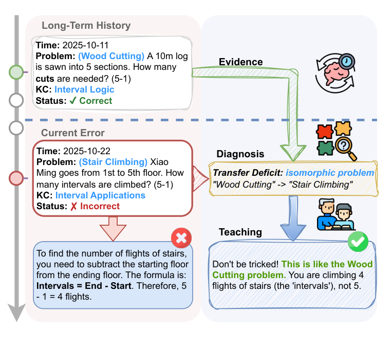
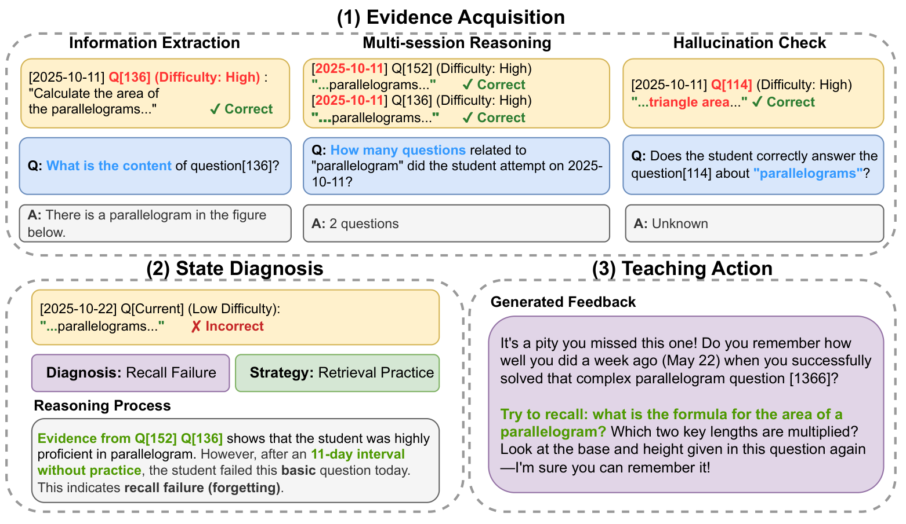
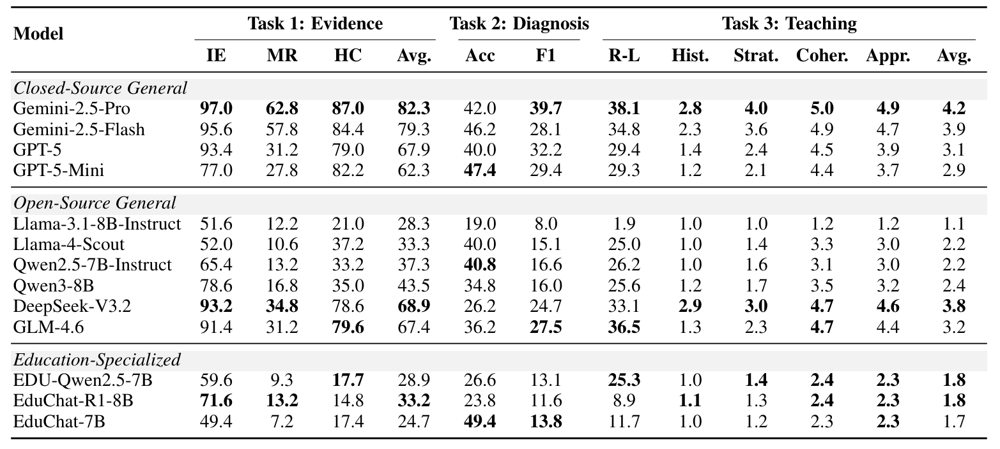
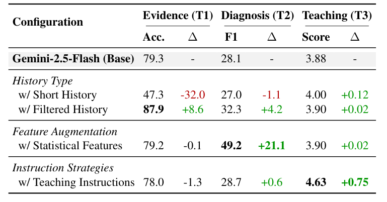
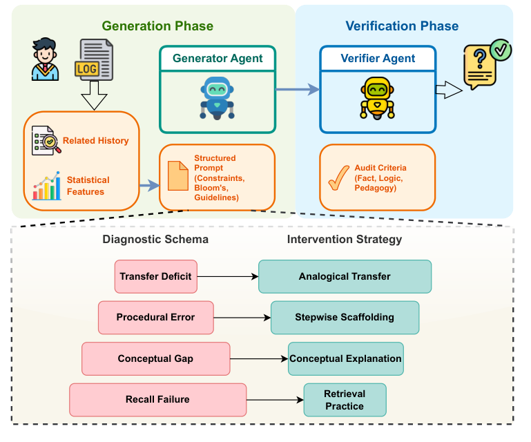

LongTutor：从学习历史到知识诊断，再到个性化教学
论文：Ning Li 等，LongTutor: Benchmarking Large Language Models for Long-term Personalized Tutoring，ACL 2026 Long Papers，论文页码 29712–29737。以下「第几页」指所附 26 页 PDF。
结构参考前次的 ENPMR-Bench 精读模板。
一句话概括。 LongTutor 用真实学生做题日志，加上专家标注的认知错误类型和教学建议，检验 AI 家教能否完成 找历史证据 → 判断为什么错 → 据此选择教学行动 的连续过程。
先给判断。 论文的价值在于把长期教育记忆从「能否回忆」推进到「能否诊断并教」。主要结果显示，模型查到单条历史较容易，跨多次练习推理、区分认知状态和用历史制定教学回应仍困难。最值得注意的实验启示是：预先筛出相关历史、显式计算学习统计特征，对诊断的帮助可能大于只加长上下文。不过，这些增强条件使用了额外结构化信息；静态教学评分和模拟学生成功率也不能直接等同于真实学习效果。
一、为什么需要长期个性化教学基准
同一道题答错，原因可能不同。学生刚学一个概念，可能是概念不理解；以前会做但今天忘了，可能是提取失败；掌握了相关知识却认不出新题的同构关系，可能是迁移不足。如果只看当前这一次作答，AI 家教很难决定该讲定义、带着做步骤、练习回忆，还是引用学生过去成功的相似题。（第 1–2 页）
图 1 用「切木头」和「爬楼梯」说明：学生 11 天前会用「五段只有四个间隔」解切木头题，今天却把楼层数当成爬过的楼梯段数。好的教学回应应找回以前的成功经验，指出两题共享「数间隔」结构，再引导学生自行迁移；单纯给当前题公式，缺少长期个性化。（第 1 页）

图 1｜把曾经做对的切木头题用于爬楼梯题。原文 PDF 第 1 页。从历史成功推断学生已经掌握间隔概念，再用类比提示迁移。
作者据形成性评价思想，把能力分成三层：

图 2｜证据获取、状态诊断和教学行动。原文 PDF 第 4 页。上半部分展示三类证据题，下半部分展示如何从证据到诊断再到反馈。
| 层次 | 测什么 | 关键区别 |
|---|---|---|
| Evidence Acquisition | 从学生历史提取事实、跨记录计数、识别不存在的线索 | 事实有没有找准 |
| State Diagnosis | 从历史与当前错误推断认知状态 | 为什么会错 |
| Teaching Action | 依据诊断和历史生成恰当的教学回应 | 下一步怎么教 |
这个顺序有意义：历史找错会让诊断失准；诊断失准会让教学策略偏离。论文也用单独实验检验了后一段依赖关系。（第 2、4、7 页）
二、数据从哪里来，专家怎样标
LongTutor 的金标准来自 XES3G5M 的真实小学数学作答日志，历史记录包含题文、知识点、时间戳、对错标签。作者先筛选长度 超过 200 条记录、跨度 超过 7 天的学习序列，得到 3,437 条，再随机选 1,000 条做专家标注。两位教育领域专家独立标注每例的证据问答、诊断类别和教学行动；第三位资深专家裁决分歧。两位主标注者在诊断类别上的 Cohen’s \(\kappa=0.90\)。这个一致性数字针对诊断标签，不能扩展成证据与自然语言教学回复的全部一致性。（第 5 页；附录 E）
论文还构造银标准：对 XES3G5M 剩余 2,437 条序列用生成器—核验器标注，并将流程迁移至大学 MOOC 数据 MoocRadar，生成 729 条。合计 4,166 条学习序列，其中人工金标准 1,000 条、模型合成 3,166 条。主模型结果基于人工金标准；银标准用于扩展与一致性验证。（附录表 5，第 13 页）
一个决定评测含义的细节： 虽然入选学生序列超过 200 条，模型主实验的输入是最近 100 条练习记录，不是全部历史。每条输入带问题文本、知识点、时间和对错，再附当前答错的题；模型按统一 JSON 格式输出证据、诊断、理由、策略和教学回复。核心提示始终提供四类诊断的定义及对应策略。（附录 H、图 7，第 15、25 页）所以结果测的是「在一个较长、结构化的近期历史窗口中推理」，不等于无限长记忆系统的端到端能力。
四类诊断与对应策略
| 诊断标签 | 作者的定义 | 预设教学策略 |
|---|---|---|
| Recall Failure：回忆失败 | 以前掌握，今天未能提取基本事实或术语 | 回忆练习 |
| Conceptual Gap：概念缺口 | 对概念关系有根本性误解 | 概念解释 |
| Procedural Error：步骤错误 | 理解概念，但在算法、技术或计算步骤上失误 | 分步支架 |
| Transfer Deficit：迁移不足 | 会在旧情境中使用知识，不会在新题中识别何时应用 | 类比迁移 |
作者把这四类映射到修订版布鲁姆分类的知识维度。它是一套可操作的标注框架，不是经独立心理测量证实的唯一认知分类；一名学生也可能同时存在多种原因，但任务要求选一个标签。（附录表 6，第 13 页）
金标准类别并不均匀：步骤错误 50.6%、回忆失败 21.2%、概念缺口 18.0%、迁移不足 10.2%。因此主要看 Macro-F1 比只看准确率更合理。正文图 3 的图注写「步骤错误和迁移不足占主导」，但图中的迁移不足恰恰最少；以下采用图表数值。（第 6 页）
三、怎么评分，实验是否把三层区分开
证据任务分为信息提取 IE、跨记录推理 MR、幻觉检查 HC。使用语义准确率：先允许非逐字的等价答案，再由模型判断与标准答案是否一致。诊断任务报告四类准确率与 Macro-F1。教学任务报告 ROUGE-L 作辅助，重点由 Gemini-3-Flash 依据具体样本与参考答案，在历史使用、策略匹配、连贯性、合适性四项上各打 1–5 分，取平均。（第 5–6、24 页）
论文比较闭源通用模型、开源通用模型和教育专用模型，在统一零样本提示下运行。这里「零样本」表示没有给该模型示例；提示中仍有完整的标签定义、策略映射和 JSON 输出要求。（附录 H、图 7）教学分反映该 rubric 和模型裁判的判断，不是学生最终学会多少。
四、实验分别证明什么
1. 主结果：取单条证据容易，跨历史推理与诊断难

表 2｜LongTutor 金标准测试集主结果。原文 PDF 第 6 页。把信息提取 IE 与跨记录推理 MR 对照阅读，再看诊断 Macro-F1 和教学历史利用分。
| 模型 | IE | MR | HC | 诊断 Macro-F1 | 教学平均（1–5） |
|---|---|---|---|---|---|
| Gemini-2.5-Pro | 97.0% | 62.8% | 87.0% | 39.7% | 4.2 |
| Gemini-2.5-Flash | 95.6% | 57.8% | 84.4% | 28.1% | 3.9 |
| GPT-5 | 93.4% | 31.2% | 79.0% | 32.2% | 3.1 |
| DeepSeek-V3.2 | 93.2% | 34.8% | 78.6% | 24.7% | 3.8 |
| Qwen3-8B | 78.6% | 16.8% | 35.0% | 16.0% | 2.4 |
| EduChat-7B | 49.4% | 7.2% | 17.4% | 13.8% | 1.7 |
表 2（第 6 页）最直观的差距是 IE 与 MR：Gemini-2.5-Pro 从 97.0% 降到 62.8%；Qwen3-8B 从 78.6% 降到 16.8%。说明找出局部历史细节与综合多次练习并非同一能力。诊断最好的 Macro-F1 也不足 40%，明显低于历史信息提取。
教学分还要看子项。Gemini-2.5-Pro 的连贯性／合适性为 5.0／4.9，但历史利用只有 2.8；GPT-5 的历史利用为 1.4。好听、通顺的反馈不一定真正用了学生的过去。（表 2）
一些教育专用模型落后同源通用底座。文中举例 EDU-Qwen2.5-7B 与 Qwen2.5-7B 的证据平均分为 28.9 vs. 37.3、教学平均分 1.8 vs. 2.2。这提示教育微调可能损失长历史使用能力，但它是具体模型间比较；训练数据、指令和模型版本也可能不同，不能泛化成「教育微调必然有害」。（第 7 页）
2. 历史怎么给，影响哪个环节

表 3｜历史窗口、统计特征和教学指令的敏感性分析。原文 PDF 第 7 页。缩短历史、筛选知识点、增加统计特征和增加教学指令分别影响不同阶段。
Gemini-2.5-Flash 的敏感性实验（表 3，第 7–8 页）：
| 输入设置 | 证据平均 | 诊断 Macro-F1 | 教学平均 |
|---|---|---|---|
| 最近 100 条历史（基准） | 79.3% | 28.1% | 3.88 |
| 仅最近 20 条 | 47.3% | 27.0% | 4.00 |
| 按相同知识点筛选历史 | 87.9% | 32.3% | 3.90 |
| 加显式学习统计特征 | 79.2% | 49.2% | 3.90 |
| 加详细教学指令 | 78.0% | 28.7% | 4.63 |
怎么读： 截短历史明显伤害证据获取，但教学评分略升，说明长历史也可能给生成阶段带来噪声；知识点过滤同时提高证据和诊断；统计特征使诊断 Macro-F1 增加 21.1 个百分点；详细教学指令提高教学评分 0.75。这四个变体改变的东西不同，不要把它们当成互斥的单一最终系统。
尤其需要留意：按知识点过滤要知道当前题的知识点；统计特征由完整历史预先计算，包括相关概念正确率、最近表现等。它们给模型提供了额外整理过的信息，并不证明模型单凭原始日志已会自动推断这些特征。（附录 J，第 17–18 页）
论文还比较了语义 Top-20 RAG 与 100 条完整窗口：证据 74.2% vs. 79.3%，诊断 21.4 vs. 28.1 Macro-F1，教学 3.3 vs. 3.9。这说明简单语义相似检索会丢掉时间连续性或错误轨迹；但只比较了一个 Top-20 方案，不能推断所有检索记忆系统都不如完整历史。（附录表 11，第 17 页）
3. 诊断与教学是否真的有依赖
把标准诊断替换成模型预测诊断，教学分从 4.6 降到 3.9；各模型诊断 Macro-F1 与教学分的 Spearman 相关为 0.88。这支持「诊断准确性影响教学」的任务链设计，但相关性并非严格的因果证明，也可能含模型总体能力差异。（第 7 页；附录表 10）
作者用 100 条分层抽样的教学回复比较模型裁判与教育专家，教学总分 Spearman \(\rho=0.87\)、92% 在 ±1 分内。另用固定 GPT-5 模拟学生，在最多三轮里测答对当前题的比例；五个模型的静态教学分与模拟成功率排名相关为 \(\rho=0.90\)。这为静态评分提供辅助验证，但模拟学生事先被注入标准诊断，且只有五个模型；它不是对真实学生学习增益的测量。（附录表 8–9，第 16 页）
4. 自动扩展的数据可靠吗

图 4｜学习诊断数据的生成与核验流程。原文 PDF 第 8 页。生成器用相关历史和统计特征草拟标签，核验器审核事实、逻辑和教学策略。
生成器先看相关知识点筛选的历史和统计特征，提出诊断与教学回复；核验器再对照原历史检查事实、诊断逻辑和教学有效性。最佳组合 GPT-5 生成、Gemini-3-Flash 核验，在 100 条人工金标准样本上的诊断标签一致性为 \(\kappa=0.81\)、准确率 87%；GPT-5 单独生成是 \(\kappa=0.61\)、准确率 74%。（第 8 页；附录表 12）
扩展出的 2,437 条 XES 银标准上，作者比较五个模型与金标准的排名：证据和教学的 Spearman 相关均为 1.00，诊断为 0.90。这表明银标准能较好复现这五个模型的相对顺序；但样本模型仅五个，完美排名相关不能证明每个自动标签都正确，也不能保证对新模型或新学科仍一致。（第 9 页；附录表 13）
五、结论应保留的边界
- 长历史的定义有两个层次。 数据筛选要求序列超过 200 条，主模型实际只见最近 100 条。对更早证据的真实长期检索能力还需另测。（第 5、15 页）
- 真实日志加上了专家解释。 做题对错、时间戳和题目是真实数据；「为什么错」及推荐教学策略是专家基于有限记录推断的标签。相同错误可能有多种合理诊断，四选一分类简化了学生状态。
- 类别不平衡与语言／格式影响分数。 步骤错误占约一半，弱模型可能靠多数类提高准确率，故看 Macro-F1；统一 JSON 和长中文教学历史也可能使部分英语中心模型失分。（第 6、15–17 页）
- 教学动作受预设映射约束。 四类诊断各有固定目标策略，模型裁判也参考标准教学答案。因此评分很适合检查「是否按照这套教育框架回应」，却不覆盖教师可能采用的所有合理策略。（附录表 6、图 6）
- 模拟成功率不是现实成效。 固定 GPT-5 学生模拟器已知道标准认知状态；真实学生的理解、情绪、长期保持和迁移尚未验证。
六、R&Q：接下来可以研究什么
RQ1｜能否让诊断直接利用学生的时间轨迹？ 将相关知识点正确率、遗忘间隔、难度变化显式建模，比较纯文本、统计特征和可解释状态追踪，而不只依赖长提示。
RQ2｜什么检索能保留「学习过程」？ 比较按知识点、时间邻域、错误模式和先修关系组合检索，并固定 token 预算，检验是否优于完整 100 条窗口。
RQ3｜多诊断并存时怎样教？ 允许模型提出带置信度的多个假设，再用澄清题或追问缩小范围，避免把复杂学生状态硬塞进四个互斥标签。
RQ4｜教学分高是否让学生长期学会？ 在教师监督下做真实学生后测与延迟测，并记录误诊、学生负担、迁移题表现和个体差异。
最终收获。 LongTutor 最重要的贡献是提出一个可核对的研究链：历史证据 → 认知状态 → 教学行动。它也提醒我们，教育记忆系统的目标不只是找到类似旧题，更要从一段学习轨迹中判断学生现在需要什么，并检验指导是否真正改善学习。